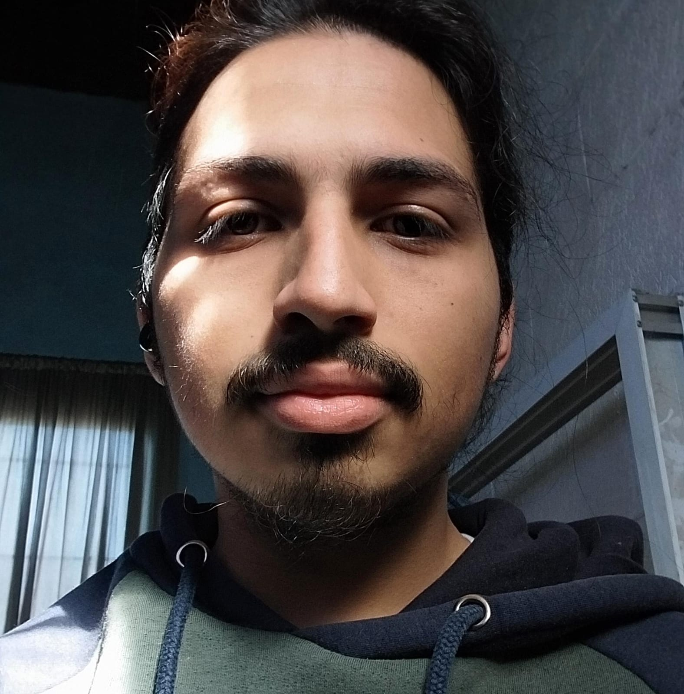

Mi nombre es Franco Reyes, soy un estudiante de 20 años en la UNPAZ, en la carrera de Licenciatura en Desarrollo y Produccion de Videojuegos.
En esta pagina mostrare los proyectos en los que fui parte mientras estudie la materia de Fundamentos de la programacion 1, hechos en Scratch, RPG Maker MV y Unity.
Este proyecto llamado "Chicken´s Road" lo realice junto a Giuliana Ayala, Nestor Flores y Dylan Saavedra, este proyecto fue hecho en Scratch trata de un pollito el cual tiene que saltar para esquivar rocas para juntar puntos,
Informe sobre el juegoEn este proyecto trabajé con Giuliana Ayala, Nestor Flores, Dylan Saavedra y Jeremias Riquelme. En este juego, uno tiene que entrar a una recreacion de la sede principal de la UNPAZ, donde el jugador tiene que encontrar a la persona la cual puso una bomba en la universidad para derrotarla y desactivar la bomba
Link de descarga del juegoEn este proyecto trabajé con Jeremias Riquelme y Ian Leiva. En este juego, el jugador empieza en un cuarto, donde abriendo una puerta encontrara un laberinto con enemigos los cuales tendra que esquivar mientras encuentra diferentes objetos, los cuales sirven para abrir una puerta para ganar el juego
Informe sobre el juegoGracias por tu atencion.